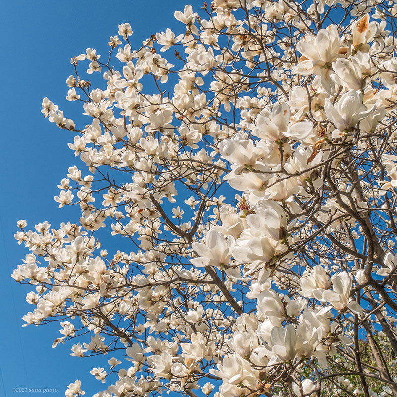
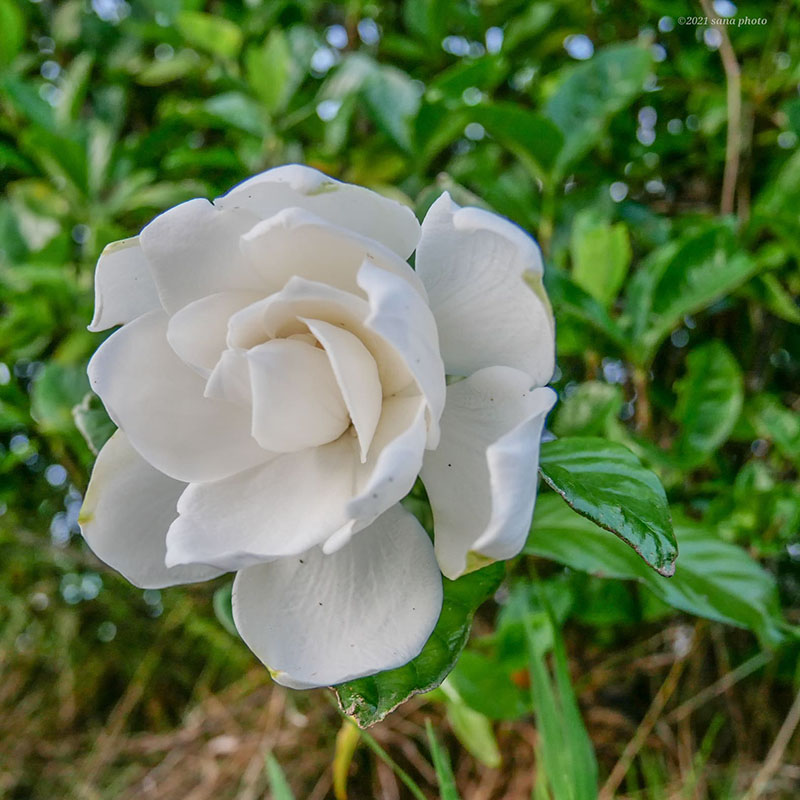

sanaの撮ったお花の中から厳選して図鑑にしました☆彡
Pink
-

金魚草
オオバコ科の多年草。高温多湿に弱い
花の形が金魚に似ている事から名前がつく
英名:スナップドラゴン -

ストック
アブラナ科の1年草。生育適温5℃～25℃
茎が太く丈夫な事が名前の由来
和名:アラセイトウ -

ハナミズキ
北アメリカ原産ミズキ科の落葉高木
陽当りの良い場所を好み、4～5月が見頃
別名:アメリカヤマボウシ
Yellow
-
ミモザ
オーストラリア原産マメ科アカシア属
樹高が10m以上になり見頃は2～3月
和名:銀葉アカシア、フサアカシア -
東北八重ひまわり
キク科の1年草。園芸品種
中央が細い花弁で満たされている
一重咲き品種より日持ちがいい -
ミツマタ
ジンチョウゲ科の落葉低木
中国原産、山間部に自生し3～4月見頃
枝が必ず三つに分かれ三椏とつく
Blue
-
ネモフィラ
北アメリカ原産ムラサキ科の耐寒性1年草
草丈は10～20cm、4月～5月見頃
別名:ルリカラクサ -

ツリガネスイセン
ユリ科の球根植物
南ヨーロッパ原産、4～5月見頃
別名:シラーカンパニュラータ
スパニッシュ・ブルーベル -
ワスレナグサ
ヨーロッパ原産ムラサキ科1年草
直径1cmに満たない極小花、3月～6月
英名:forget me not
White
-
梅花藻
キンポウゲ科多年性沈水植物、日本固有種
7月下旬～8月下旬見頃
水温14℃前後の清流にしか生育せず
全国でも生育場所が限られる -

ハクモクレン
中国原産モクレン科の落葉高木
紫木蓮より樹高が高く3月～4月見頃
英名:チューリップホワイトマグノリア -

クチナシ
アジア原産アカネ科の常緑低木
香りが甘く香水の原料になり6～7月見頃
英名:ガーデニア、ケープジャスミン